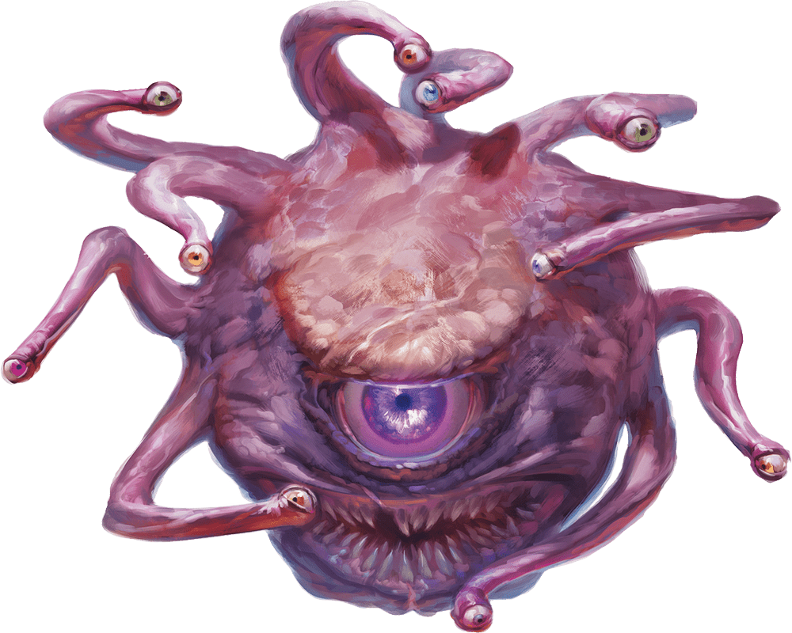
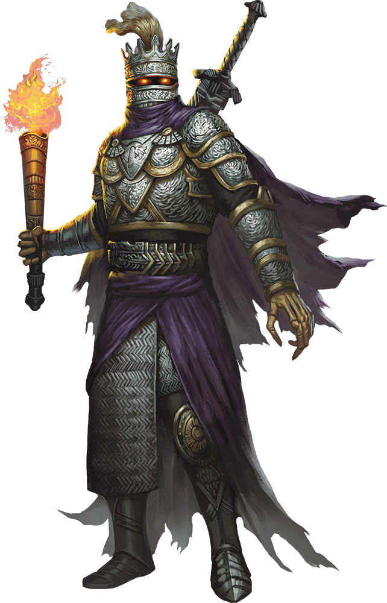
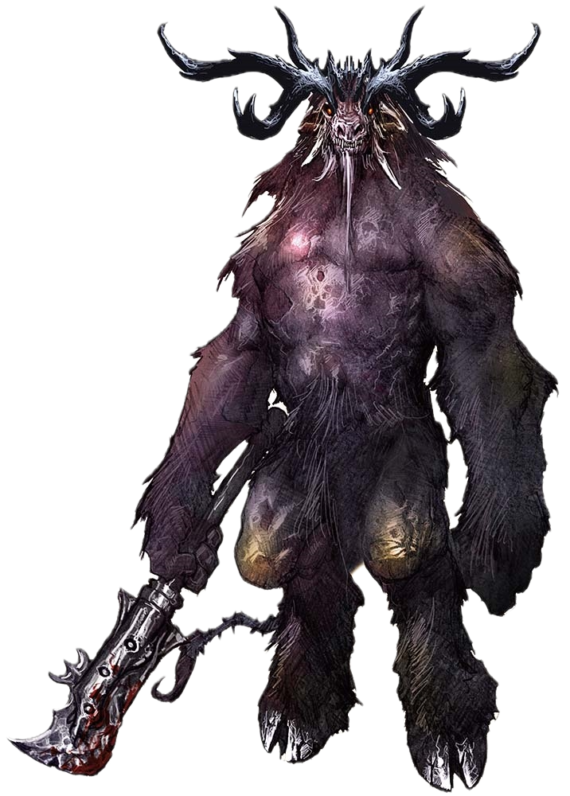
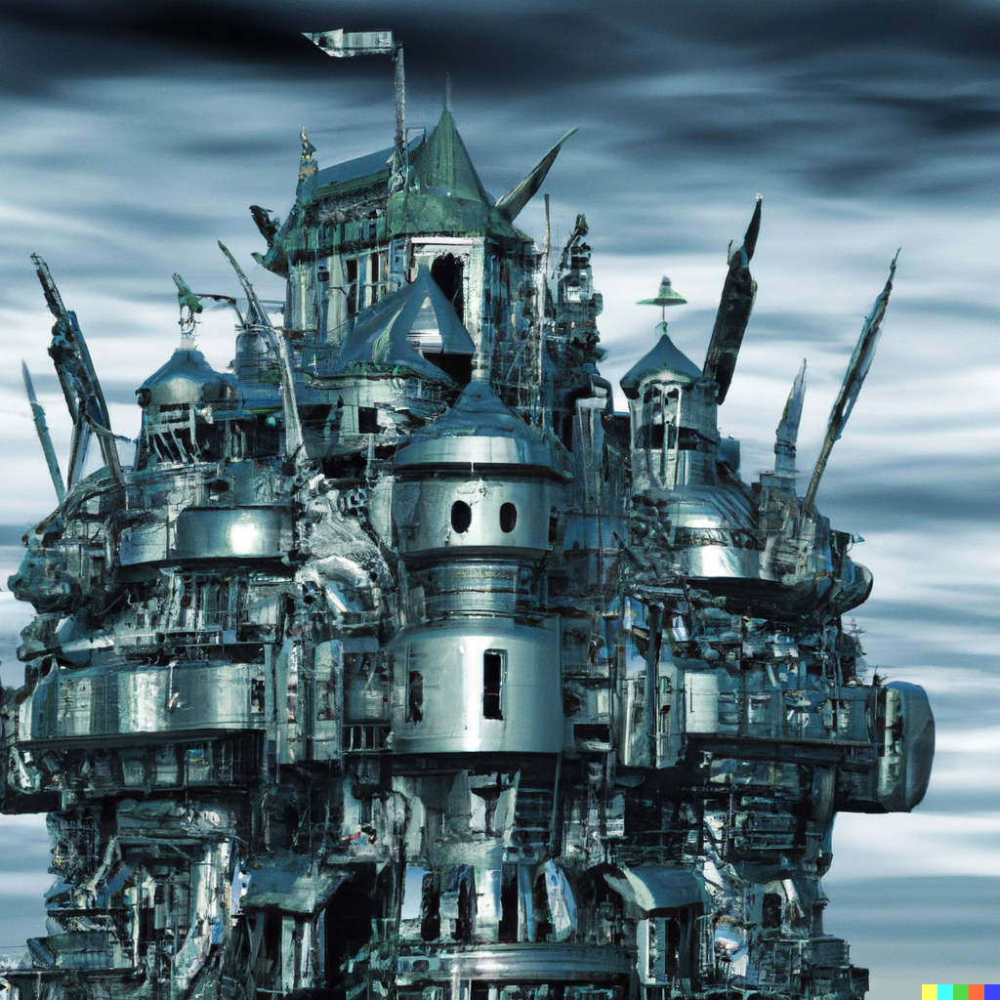
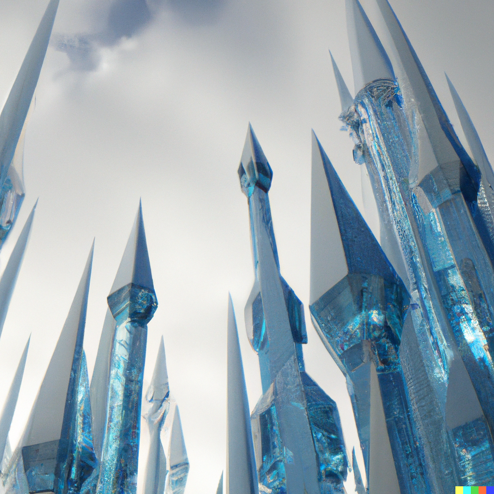

Twenty-Fifth Session
The End of the Beginning
Dramatis Personae
- Actias Aureus, a 10th-level Tiefling Warlock
- Avren Varan, a 10th-level Half-Elf Bard
- Benjamin, a 12th-level Wood Elf Ranger
- Calmul Rhoqiroth, a 12th-level Dragonborn Artificer
- CoralKing, a 12th-level Gnome Monk
- Geral Bryn, a 12th-level Human Fighter
- Orky, a 12th-level Half-Elf Paladin
- Steve, a 12th-level Halfling Rogue
- Tasbros, a 12th-level Sky Elf Sorcerer
- Tysnera, a 12th-level Sky Elf Wizard
- Viker, a 12th-level Eladrin Druid
- Wulrif, an 11th-level Human Warlock
Summerday +1108 hours

From the journal of Dame Orky
We approach the next room and feel our items lose their magic. We move slightly closer and Geral sees a Beholder floating about 40 feet off the ground, pinning us in the baleful glare of the central eye. We also see Constructs skittering around in the back of the room. Flesh Golems form a wall protecting the Beholder.
"It's a shame you broke my toys, did you bring me new ones?" a Telepathic voice echoes in our heads.
"Where is Droki?" asks Geral.
"Scurrying down his usual rat hole to the Monolith." The huge head nods and indicates a small hole in the wall.
"How do we get through the hole?"
"You don't. Unless you have a shrinking potion."
"Do you have a shrinking potion?"
"I can make one, but I'll need something for my trouble. Also, a drop of blood from each of you."
"Your name in my Book of Shadows, if you die, I'll bring you back to life." says Wulrif.
"I'd like to see this book." says the Beholder.
Wulrif feels there is an extra attachment to his book. We take a short rest while the small Clockworks come by to take a drop of our blood. The Beholder busies itself in its corner, Telekinetically manipulating a cauldron and various ingredients.
A little while later ...
"Your potions are ready. Don't get them mixed up, they are not labeled," giggles the Beholder.
"What happens if we get them mixed up?" asks CoralKing.
"Well, they're tailored to your genetics, so it might be a big problem. Or it might not be a problem. I don't know, I'm not a geneticist."
We carefully take our own potions to quaff.
"One last thing, you'll need a dimensional pocket to put your extra mass in. I don't know if you have one, but you'll need one. Otherwise, you may not like what happens when you revert to your normal size."
A horrible chuckle.
Calmul eventually realizes that he has the ability to build one! He nearly disappears into a fog of animated tools and constructs, and we can see him grasping nearby objects as the object manifests. The finished product is a metal, folding contraption thing that expands and contracts in strange directions and has lots of gears on it.
We drink our potions and shrink, watching puddles of reddish-pinkish-brown slime drain away into Calmul's metal box. We are now 6" high, and the air is strangely thick. Benjamin and Wulrif work together to track Droki, but the tunnels are long and confusing. After 8 hours of progress, Benjamin loses the trail and takes a guess as to which way we should travel. Geral gives Benjamin some Inspiration and he eventually recovers the track. We start to feel tingly after a long time of traveling. Then, we find ourselves in a larger area and start to see rocks orbit us. We realize that we are growing in size, and quickly get Calmul to open the Box of Holding so we can gain our original forms with our original mass.
We feel a bit out of sorts, funny tastes and twinges throughout our bodies. We are in a large cavern with a series of stepped pyramids, the Monolith on the central, highest mound. We see a bunch of Drow and Driders and, looking expectantly at us, Mistress Ilvarra.
“See M’lady, here they are.” says Droki.

We are immediately faced with the blaring noise of a Shrieker, alerting every creature in this cavern of our presence.
Round 1
- Benjamin casts a spell to damage 4 Drow by 1 HP and the Shrieker, killing it. The shrieks thankfully fade.
- CoralKing Teleports to the top of the highest mound and swings at the nearest Drow with his staff, doing 27 HP damage.
- Tasbros casts a Fireball but gets Counterspelled.
- Tysnera casts Fireball at 5th level and lands 42 HP damage to the Drow, staggering them. Many are wearing burning cloaks.
- Viker casts Firewall and does 18 HP damage on 5 Drow Elite Warriors.
- Wulrif uses 2 Sorcery points and Quickens Sickening Radiance on the Drow, followed by Eldritch Blast on Mistress Ilvarra, which pushes her backwards 10 feet.
- Calmul shoots a Drider with his musket, because he doesn't like giant Spider-things.
- I move forward 20 feet, cast Searing Smite, and ready my action. If I am attacked within 5 feet, I will counterattack twice with my Great Sword. A Drow Elite Warrior obliges me and I slip his strikes, countering for 31 HP damage.
- Droki sneaks up behind Wulrif and backstabs him for 57 HP damage! Droki then disappears in a globe of Darkness. The enemies move in to surround me and Benjamin. They do 38 HP damage to me and a significant amount to Benjamin. They attack Viker for 20 HP damage. Geral is attacked and so is CoralKing, who gets hit for 22 HP damage.
- Avren casts Dispel Magic and the Darkness goes away!
- A Priestess casts Mass Cure Wounds on their forces. Mistress Ilvarra Dispels Viker’s Wall of Fire, which is burning up her warriors. I get 26 HP damage and so does Tysnera. Simultaneously, tentacles and noxious green fumes erupt around us, holding us in place and choking us for a ton of damage.
- Steve nimbly skips out of the way of the Black Tentacles and Cloudkill and backstabs Droki, avenging Wulrif and doing significant damage.
- Geral's Shield of Alertness warded him from the spells, so he charges and provokes 3 attacks of opportunity while moving to attack Droki 3 times. He uses Action Surge to hit him again, doing 30 HP damage.
Round 2
- Benjamin shoots the Drider Calmul shot, because he also doesn't like giant Spider-things.
- CoralKing Shadow Steps onto the opposite side of the Monolith and attacks one of the Drow Mages, killing him and incidentally dispelling the Cloudkill, because you can't hold a Concentration Spell when you're dead.
- Wulrif tries his best, but fails to hit Droki back with Eldritch Blast.
- Tasbros struggles in the Black Tentacles and casts Sunbeam using his Metamagic, damaging a line of Drow as far as the Priestesses for 32 HP damage each.
- I turn around, declare a Vow of Enmity on the Drow Elite Warrior attacking me, and swing at him. I do 31 HP and he dies. I quickly move and attack another Drow at the edge of the tentacles, doing 19 HP damage.
- Tysnera casts Fireball, doing 28 HP damage to a bunch of Drow. They're definitely all burning now.
- A Drow Elite Warrior attacks CoralKing, doing 31 HP damage. Some Drow Crossbowmen attack CoralKing and miss, but hit Geral for 5 HP. Geral Saves against the poison.
- Avren moves out of the Black Tentacles and casts Dispel Magic again, getting rid of them!
- Mistress Ilvarra casts something extremely nasty at Tasbros, who successfully Counterspells it!
- Steve attacks Droki and misses.
- Viker casts Daylight, covering the entire battlefield. All the Drow and Driders immediately flinch and are Disadvantaged! She also attacks a Drider and does 9 HP damage.
- The surviving Drow Mage casts Lightning Bolt and hits Benjamin, Tasbros, and me.
- The Driders attack Viker and do serious damage.
- Geral kills one of Viker's attackers.
Round 3
- Benjamin shoots Droki with his bow and does 14 HP damage.
- CoralKing strikes Droki with his staff and does 46 HP damage.
- Tysnera casts Fireball on Droki and Mistress Ilvarra, doing 35 HP damage. That takes Droki out.
- Calmul shoots a Drider for 7 HP.
- Tasbros summons a Draconic Spirit which attacks Mistress Ilvarra, taking her out.
- Wulrif casts a Quickened Witch Bolt on the remaining Priestess, killing her. He casts Eldritch Blast on the remaining Mage, hitting him 3 times for 40 HP. He completely flies off the mound and dies a horrific death.
- Viker heals Wulrif for 70 HP, reviving him from the brink of death!
- The 2 remaining Drow Elite Warriors touch the Monolith and disappear.
- Avren casts Mass Cure Wounds on us for 20 HP each.
- I barely avoid getting hit by the Driders. Tasbros Dragon Spirit interposes and takes 19 HP from a Drider. I do 40 damage on a Drider.
- Geral directs a Commander's Strike on me to hit the Drider and we kill one.
- I finally do significant damage on another Drider.
Round 4
- Benjamin sprints up to where Droki is before a Drider can drag him away.
- Wulrif Eldritch Blasts the Drider near Benjamin, knocking it back.
- Tasbros uses his Dragon Spirit to attack the Drider attacking him and misses. He then uses Chromatic Orb on it, doing 15 HP damage and setting it on fire.
- Steve uses a Sneak Attack with his crossbow for big damage on Tasbros Drider.
- I move up to Droki, throw my manacles to CoralKing and direct him to cuff our prisoner. He does so.
- Tysnera Magic Missiles a Drider for guaranteed damage.
- Avren shoots a Drider 9 HP damage.
- Geral does Commander's Strike on Wulrif to Eldritch Blast a Drider. He and Geral do 28 HP.
Round 5
- Wulrif does 22 HP damage to a Drider.
- Viker uses Ice Knife and freezes a Drider in place.
- Geral runs down to the Drider and does 11 HP damage.
- Tasbros uses Ray of Frost on another Drider.
- Viker does 28 HP damage on the same Drider, killing it.
- CoralKing turns and throws a dart at the remaining Drider for 12 HP damage.
- Benjamin shoot the Drider and kills it!
I pull out my dark religious symbol gifted to me from the Dragon. It is strongly drawn to the Monolith, leaping out of my hand and merging with it. The Monolith heals a crack, there's a flash, and we find ourselves in a maze. A confusing blur, twisting in unknown directions, and then ...

We're in a giant shuddering space, filled with clanking and the smell of machinery. We see enormous industrial Smelters, and a huge armored form standing amidst a circle of a dozen slain Templar. Lines drawn in blood and ash form a summoning circle which has a glowing black rift that something is coming through. The figure turns to us.
He's clad in blackened, tarnished Adamantium Plate draped with the smoking remnants of a Templar's White and Red tabard. Glowing red orbs contemplate us from the eye slits of his helmet. He's holding a huge sword which reeks with the stench of death.
"I SACRIFICED MY FRIENDS TO SUMMON YOU!!!" screams the armored form.
"I AM BAPHOMET, LORD OF MAZES, AND YOU WILL ALL DIE!"

Wulrif attempts Telekinesis to lift up the screaming guy, but fails. I recognize him as a Death Knight, a fallen Paladin, doomed to state the act that turned him. A terrifying 20 foot tall Fiend steps through the portal. We realize that we are somehow in Neverwinter.
Round 1
- Steve sneaks away and Hides from the big scary things.
- Wulrif uses Eldritch Blast on the Death Knight.
- Avren does 17 HP damage to Baphomet. She uses her Bardic Inspiration on CoralKing.
- CoralKing Shadow Steps to the Death Knight and uses 2 staff strikes, doing 23 HP damage. He tries a Stunning Strike, but it fails.
- Benjamin uses his Hunter’s Sense on Baphomet. He is resistant to lightning, cold, and fire.
- The Death Knight continues to scream his sins and attempts to attack CoralKing.
- Tysnera attempts to Banish Baphomet and the Death Knight, but fails.
- Tasbros uses Level 4 Confusion on the Death Knight and succeeds! His Draconic Spirit attacks Baphomet.
- Geral attacks Baphomet.
- I cast Blinding Smite and attack Baphomet twice, doing 47 HP damage.
- Viker hits Baphomet for 13 HP damage.
- Calmul moves away and shoots Baphomet.
Round 2
- Steve hits Baphomet once from behind for 20 HP.
- Wulrif casts Witch Bolt for 12 HP damage on Baphomet.
- Avren strikes Baphomet with her rapier again, doing 13 HP damage.
- CoralKing hits the Death Knight with his staff and a Flurry of Blows, for 25 HP damage.
- Benjamin hits Baphomet for 11 HP damage.
- The Death Knight moves toward us and casts Destructive Wave, but is Counterspelled by Tasbros.
- Tysnera Counterspells a Maze directed at me by Baphomet.
- Tysnera casts Evard’s Black Tentacles on the Death Knight, doing 10 HP damage.
- Tasbros burns through Baphomet's Fire Resistance with Fire Bolt.
- Geral hits Baphomet for 25 HP damage.
- I cast Blinding Smite again and deal 54 HP damage to Baphomet.
Round 3
- Wulrif Quickens Eldritch Blast and then casts another Eldritch Blast, for 36 HP damage each, sending Baphomet back to where he came from!
- Avren shoots the Death Knight for 30 HP. Nice shot!
- CoralKing uses Flurry of Blows for 8 HP damage.
- Benjamin does 24 HP damage.
- The Death Knight is still confused, luckily!
- Tysnera blasts it with Magic Missile, and the armor falls to the ground!
We search the remnants and take the sword, an Unholy Avenger. A platoon of Crusaders come running swords drawn, see the mess, and do magical forensics of our battle. They bring us, under polite guard, upstairs to the Armory of Neverwinter directly to their Commandant.

"How did you come to be in my city?" asks the Commandant of the Crusaders. A bluff, grizzled Human with a trace of grey hair in a buzz cut, wearing a full suit of well-cared for Plate. He somehow manages to sit behind a large desk with a a large sword strapped to his back.
"We don't rightly know, we were in a maze and then we were here." replies Geral.
"And then we fought the Lord of Mazes and sent him back to the Abyss." says Wulrif, helpfully.
The Commandant eyes Wulrif.
"You seem to have a fallen Templar," I add.
"Yes, that's a matter for the ... other ... Paladins to decide. By the way, where is his sword?"
"We have it," I reply.
"You're going to want to take that to the Magisterium, and soon. I understand that Death Knights can be ... persistent."
"M'lord?," asks Geral. "You have some prior knowledge?"
"I'm no lord," replies the Commandant. "Rising through the ranks of the Crusaders is based on merit, not birth. And you seem familiar to me."
"Major Geral Bryn, retired, at your service, sir."
"Ah, yes, I remember you now. You were the one involved in that incident with the Aboleths. I'm glad to see you're still alive."
"Sir."
"And I see your Armorer is still with you. I'm glad you're alive too, Sergeant Calmul."
"Burn it with fire," replies Calmul.
"Indeed," muses the Commandant, speculatively. "I'm sure the Magisterium will be interested in your story. I'll have a squad escort you there to deal with your ... prisoner."
"Prisoner?" asks Geral.
"Yes," chuckles the Commandant. "Lord Varkosian will certainly come out of that sword for Round Two, in about twenty hours, if I'm not mistaken."
"Then we'd better hurry," says Geral.
"Dismissed," says the Commandant, with a twinkle in his eye.
"With all due respect, sir, we're not in service anymore." says Geral.
"Oh, the forms will be ready for your Recommissioning at your Investiture, I imagine." The Commandant stands and smiles, then executes a textbook salute. "I won't hold your noble rank against you."
Our escorts snap to attention when we leave the Commandant's office. We wind our way out of the hulking Armory, Calmul in some sort of reverie, analyzing the guns and machinery defending the fortress. We are escorted to an express elevator Topside, opening into the famous Hanging Gardens. Benjamin and Viker look around in delight as we come to the shining crystal towers of the Magisterium.

The Initiates politely but firmly ask that we remain in the lobby, filled with moving paintings of donors and long-dead Chancellors. Tasbros and Tysnera are escorted into the inner sanctum, the Unholy Avenger in Tysnera's Bag of Holding.
"Enter," intones a voice formally, the room dark except for the Examiner's table and glowing crystal orb. Seven robed figures sit in a semicircle around the table, their faces hidden in shadow.
"What are we doing here?" asks Tasbros.
"We have brought the Unholy Avenger," says Tysnera.
"How shall we deal with this artifact?" asks the voice.
"We should destroy it," says Tysnera.
"Destruction of an artifact is a serious matter," says the voice. "What is your reasoning?"
"It is a weapon of evil, and it is cursed," says Tysnera.
"Destruction would require the fires of an Ancient Red Dragon, or access to the Deep Underdark. Do you have such access?"
"We should cleanse it," says Tasbros.
"How would you cleanse it?" asks the voice.
"We would need to find a way to release the soul of Lord Varkosian from the sword," says Tasbros.
"That would be a matter for the Templar," says the voice. "Do you have any other suggestions?"
"We could suppress the magic of the sword," says Tysnera. "You have an Anti-Magic Field, don't you?"
"We do," says the voice. "But that would not be a permanent solution."
"We will consult with our friends," says Tysnera.
"Very well," says the voice. "We will keep the sword suppressed until you return."
"Thank you," says Tysnera. They turn to go.
"Wait," says the voice. "We have a question for you."
"Yes?" asks Tysnera.
"We have seen the traces of your battle with Baphomet. That was a skillful use of Mana."
"Thank you," says Tasbros.
"We would like to offer you the position of Magister. You would be required to teach others your techniques, of course. It comes with a stipend, and you would be granted access to the Library."
Tasbros and Tysnera look at each other.
"We will consider your offer," says Tysnera.
Twenty-four hours later, we are in St. Paul's Cathedral, staring at the dizzying spiral that is the Ledger of the Peerage. Geral is resplendent in his new uniform, and Calmul is wearing a new suit of Crusader Armor. Tasbros and Tysnera are in the robes of the Magisterium, Wulrif in a dark suit. Avren sparkles in a silken many-hued dress, humming and taking note of the spectacle for later recounting. My armor is buffed and polished.
"Where are Benjamin and Viker?" asks Geral.
"Fussing over a Dragon's egg," I reply.
"CoralKing?"
"Not his thing," I commiserate. "He's off with Steve. They send their regards."
"Oh," says Geral.
"Game time," I say. "You look great, by the way."
He nods and smiles. "You too."
Squaring his shoulders, Geral and Calmul stride confidently to the base of the Ledger of the Peerage.
Marchioness Lyanna Alagondar, the ruling Temporal Lord of Neverwinter, is standing there, flanked by the Commandant of the Crusaders and the Legate of the Apostolic See.
The Marchioness acknowledges their arrival, and a golden orb floats over to Geral, pulsing. He nods gravely. The orb touches his finger, turning red, then soars to the top of the Ledger, which pulses golden.
"Major Geral Bryn, retired, is now made Baron of Cragmaw," intones Marchioness Alagondar. "All privileges and responsibilities are granted to him and his legal heirs."
"Major Geral Bryn, retired, I formally reactivate you to the rank of Colonel of the Crusaders," says the Commandant. "You are to assume command of the 349th Guards Regiment and proceed forthwith to Cragmaw in performance of your duties."
Geral briskly salutes the Commandant.
"Sergeant Calmul Rhoqiroth, you are mustered to the 349th Guards Regiment with the rank of Master Gunnery Sergeant of the Crusaders. You are to assume responsibility for the armaments and defenses of Cragmaw Castle and environs."
Calmul swishes his tail and puffs his crest. The Commandant salutes him.
"Lord Colonel Geral Bryn, Baron of Cragmaw, I request and require your service to defend the peoples of the March," intones Marchioness Alagondar.
Geral kneels and swears his oath. The Legate taps him on each shoulder with the Holy Sceptre, and he rises.
He turns and nods to us, smiling wistfully. Then he and Calmul march out of St. Paul's, flanked by the Honor Guard of the 349th.